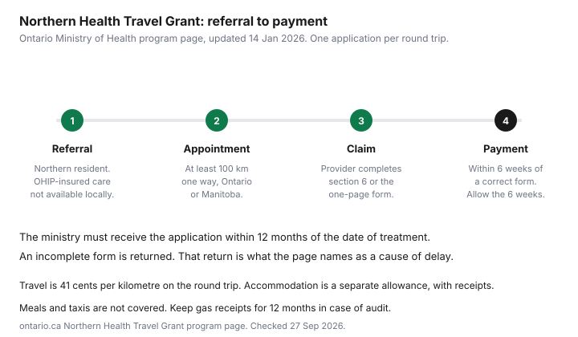

Healthcare · Canada
Ontario's Northern Health Travel Grant: Who Qualifies and How to Claim for Specialist Travel
The Northern Health Travel Grant is an Ontario Ministry of Health program. It pays part of the cost when a northern resident travels for specialist or facility care that is not available nearby. It does not pay the whole trip. The program page, updated 14 January 2026, says it does not cover meals or taxis. This page uses that program page. It is education, not a decision on your application. Confirm the form version with the ministry before you mail it. The federal medical-expense rules for the part the grant does not pay are the medical travel guide and the medical expense tax credit guide.
Key takeaways
- You must live in one of ten northern districts, be OHIP-insured on the treatment date, and travel at least 100 kilometres one way to the nearest eligible provider in Ontario or Manitoba.
- Travel is always 41 cents per kilometre on the round trip, by car, air, bus, or rail. The page does not print a deductible.
- For a service date on or after 1 December 2024, the accommodation allowance runs from $175 for one night to $1,150 for eight or more nights, against an original receipt. Meals and taxis are not paid.
- Apply within 12 months of treatment, one application per round trip. The specialist or facility must complete their section. An incomplete form is returned.
- On a tax return, claim only the cost the grant did not reimburse, and only if the federal travel tests are met.
Who qualifies: northern Ontario residents referred to a specialist 100 km or more away
The program offers assistance to Northern Ontario residents who travel long distances for specialized medical services or procedures at a ministry-funded health-care facility. To qualify, the page says you need to have travelled at least 100 kilometres one way to the nearest medical specialist or ministry-funded facility service that is not available locally, and you must submit the application within 12 months of the date of treatment. The page also asks you to consider telemedicine through the Ontario Telemedicine Network before you travel. A monitor visit that replaces the trip is not a grant.
Eligibility, in the list on the page, means all of the following. You are an OHIP-insured Ontario resident on the date of treatment. Your primary residence is in Algoma, Cochrane, Kenora, Manitoulin, Nipissing, Parry Sound, Rainy River, Sudbury, Thunder Bay, or Timiskaming. You are referred for specialist medical services by a listed kind of physician, including a Royal College specialist, a Manitoba physician on the Manitoba Health Specialist Register, a physician with a College of Physicians and Surgeons of Ontario specialist certificate in a recognized specialty other than family or general practice, or a general practitioner with a GP Focused Practice designation. A non-specialist dentist in the Cleft Lip and Palate Program or the Ontario Seniors Dental Care Program can also be the referral. A ministry-funded facility-based procedure can qualify, and the page gives examples: a cleft lip and palate clinic, a low-vision clinic, the Speech Foundation of Ontario and Toronto Children's Centre, chemotherapy at a regional cancer centre, MRI or dialysis in a hospital, and ultrasound or pulmonary function testing in a hospital. Fitting, adjustments, or repairs for orthotics and prosthetics by an Assistive Devices Program vendor can qualify. The one-way distance to the nearest provider able to provide the service, in Ontario or Manitoba, is at least 100 kilometres.
You do not qualify if the service is not an OHIP-insured benefit, the care is a Workplace Safety and Insurance Board claim, your employer pays the medical services or the travel, another government program pays the travel, the services involve a private insurer or third-party liability such as a motor-vehicle accident, you travel round trip by ambulance, the nearest specialist or facility is within 100 kilometres, the trip is not for health care, or the travel is not within Ontario or Manitoba. If you go one way by ambulance and the other way by car or public transportation, the page says you may qualify for a partial grant. Eye care that is a routine exam, rather than one of the listed specialist trips, is a different coverage question on the eye exam guide.
What the grant pays: per-km travel and the accommodation allowance
Whether you travel by car, air, bus, or rail, the travel grant is always 41 cents per kilometre, based on the round-trip distance between the centre of your area of residence and the nearest specialist or ministry-funded facility able to provide the required OHIP-insured services. The page's first example is 160 kilometres one way: 160 times 2 times 0.41 equals $131.20, with no accommodation.
The second example is 300 kilometres one way and one necessary night: travel is 300 times 2 times 0.41, which is $246, plus a $175 accommodation allowance, for $421. The third example is the same 300 kilometres and three medically necessary nights: $246 of travel plus $475 of accommodation, for $721. Those are the page's examples. They are not a quote for your town.
The program does not cover meals or taxi services. Do not submit those receipts. Keep gas receipts for 12 months in case the ministry asks for proof of travel. If several eligible patients travel in the same car, only one travel grant is paid for the round trip. If they travel by air, rail, or bus, each may be eligible. There is no deductible printed on the program page. This article does not add one.
Accommodation is a separate allowance. You must already meet the travel-grant tests, travel at least 100 kilometres one way, and submit an original accommodation receipt in your name, or as a guest. For a patient under 18, the receipt can be in a parent or guardian's name. You are not eligible if you did not pay an official accommodation expense, such as staying with a friend or family member. The number of nights is the number the specialty-service provider declares as medically necessary. For a date of service on or after 1 December 2024, the allowance is $175 to $1,150. For a service date before that, the range is $100 to $550.
| Rule | Value on the program page | As of |
|---|---|---|
| One-way distance | At least 100 kilometres to the nearest eligible provider in Ontario or Manitoba. | 27 Sep 2026 |
| Travel rate | 41 cents per kilometre on the round trip, by car, air, bus, or rail. | 27 Sep 2026 |
| Deductible | Not printed on the program page. Not estimated. | 27 Sep 2026 |
| Accommodation, service on or after 1 Dec 2024 | 1 night $175; 2 nights $350; 3 nights $475; 4 to 7 nights $1,025; 8 or more nights $1,150. Original receipt required. | 27 Sep 2026 |
| Accommodation, service before 1 Dec 2024 | 1 night $100; 2 nights $200; 3 nights $250; 4 to 7 nights $500; 8 or more nights $550. | 27 Sep 2026 |
| Meals and taxis | Not covered. Do not submit those receipts. | 27 Sep 2026 |
As of 1 December 2024, a medical travel companion accompanying a patient who is hospitalized can be eligible for an accommodation allowance. The companion must be 16 or older, must travel with you, and must pay a fare if the trip is by air, rail, or bus, with a receipt. Loyalty-program payment is acceptable. If the round trip is by personal vehicle, you and the companion may qualify for an equal share of one grant. For a patient under 18, lodging receipts can be in a parent or guardian's name.
Before you go: the referral and the parts your doctor must complete
The referral is what makes the destination an eligible service rather than a clinic you preferred. The provider you travel to completes section 6 of the paper application, including the date of the visit or procedure and the number of medically necessary nights.
On an online application, the specialty-service provider completes a separate one-page form, signs it, and you upload it. The page says not to photograph documents. A photo often exceeds the file-size limit. Scan to PDF. The same warning applies to accommodation receipts. A hotel PDF from your email is the attachment the page describes.
Paper forms are available from northern doctors, dentists, optometrists, midwives, nurse practitioners, and chiropractors. Use a current form. The page points to section 4, payment preference, as the marker of a current version. If the patient is under 16, a parent or guardian with custody, a children's aid society worker, or another lawfully entitled person may sign. If the patient is 16 or older and cannot consent, a substitute decision-maker may sign. Section 5, the authorization, is mandatory. Section 4 is mandatory. If a third-party agency advanced the travel money and should receive the grant, complete section 3.
Claiming after the appointment: forms, receipts and deadlines
All applications must be received within 12 months of the date of service or treatment. A late application will not be considered.
One application per round trip, even if you saw more than one specialist on that trip. Submit online, or by mail with original receipts to Ministry of Health, Claims Services Branch, Northern Health Travel Grant, Sudbury office, 159 Cedar Street, 7th Floor, Sudbury, Ontario P3E 6A5. Do not submit photocopies by mail. The page's phone number for that office is 1-800-262-6524.
An itemized accommodation receipt lists what was purchased and the price, names the patient, shows the dates of stay, and shows a fee paid. A credit or debit card authorization slip is not an itemized receipt. Air, bus, or rail needs the original ticket, receipt, or itinerary showing a fare paid, who travelled, the date, and the destination. If you choose direct deposit, send a bank-issued payroll direct deposit form or a void cheque the first time, or when the account changes. A companion must send new banking details with every application. The ministry does not keep companion banking information. If you choose a cheque, it goes to the mailing address on the form. The page says an approved payment is provided within six weeks of a correctly completed application, and to allow the full six weeks before checking status.
If the application is denied, you can request an internal review within 12 months of the date on the denial letter, following the letter's instructions. Exceptional medical circumstances can be appealed in writing to the external NHTG Medical Appeals Committee at the same Sudbury address. Follow the denial letter. This page does not invent a success rate for appeals.

Stacking the NHTG with the medical expense tax credit (net of the grant)
The grant and the federal credit are not the same dollar twice. Guide RC4065 says that for all medical expenses, including travel, you claim only the part you have not been and will not be reimbursed for.
You can claim the whole expense if the reimbursement is included in your income, such as a benefit on a T4, and you did not deduct it elsewhere. A Northern Health Travel Grant payment is a reimbursement of part of the trip. Subtract what the grant pays from the eligible costs before anything goes on line 33099 or 33199. If the hotel receipt is higher than the allowance, the difference may be the unreimbursed lodging, and only if the federal 80-kilometre tests are met and the night was necessary. The program does not pay meals or taxis, so those costs are not reimbursed by this grant. They still have to pass the federal tests on their own. Which spouse's return should hold the unreimbursed total is the spouse guide. The threshold arithmetic is the credits checklist only as a pointer. File the credit from the CRA guide.
Drugs you pay on the same trip are not this grant. Provincial plan rules are the drug plans comparison. A bill the provincial plan never insured is the uninsured fees guide.
Common reasons claims are delayed
The program page is specific about delay. If the application is incomplete or filled out incorrectly, it is returned, which can delay payment.
Missing section 6, or a missing uploaded provider form on an online claim, is that kind of gap. Original receipts are required for accommodation and commercial transportation. Photocopies by mail are not accepted. A card slip is not an itemized receipt. A photograph that exceeds the file-size limit will not attach. Applications received more than 12 months after treatment are not considered, which is a denial of the late file rather than a slow cheque. The page also says to allow the full six weeks after a correct application before you ask for status. Calling in week two does not move a file the page has already timed at six weeks.
Eligibility failures are not processing delays, but they produce the same empty result. The nearest provider was inside 100 kilometres. The trip was a round trip by ambulance. The care was not an OHIP benefit, or someone else was already paying the travel. The receipt was for a stay with family, which the page says is not an official accommodation expense. Read the "when you are not eligible" list before you book a hotel on the assumption the allowance will arrive.
Sources
- Ontario, Northern Health Travel Grant program page, updated 14 January 2026, published 12 January 2024. Districts, 100-kilometre test, 41 cents per kilometre, accommodation table, companion rules from 1 December 2024, receipts, 12-month deadline, six-week payment, Sudbury address, and the three worked examples ($131.20, $421, and $721). As of 27 Sep 2026.
- Canada Revenue Agency, Guide RC4065, Medical Expenses 2025. Claim only the unreimbursed part of a medical expense, including travel, unless the reimbursement is in income and not deducted elsewhere. As of 27 Sep 2026.
- No deductible appears on the Ontario program page. None is stated in this article.
Frequently asked questions
Who is eligible for the Northern Health Travel Grant?
The Ontario program page says you must be an OHIP-insured resident on the date of treatment, with your primary residence in Algoma, Cochrane, Kenora, Manitoulin, Nipissing, Parry Sound, Rainy River, Sudbury, Thunder Bay, or Timiskaming. You need a referral for an eligible specialist service or a listed ministry-funded facility service, and you must have travelled at least 100 kilometres one way to the nearest provider in Ontario or Manitoba that can provide the service. You do not qualify if the care is not an OHIP benefit, a WSIB claim, paid by an employer or another government program, tied to third-party liability such as a motor-vehicle accident, a round trip by ambulance, or travel outside Ontario and Manitoba. This is an Ontario program. It is not a federal benefit.
How far do I have to travel?
At least 100 kilometres one way from your area of residence to the nearest medical specialist or ministry-funded facility able to provide the required OHIP-insured services in Ontario or Manitoba. The grant is paid at 41 cents per kilometre on the round-trip distance, whether you go by car, air, bus, or rail. The page's own example of 160 kilometres one way is 160 times 2 times 0.41, which is $131.20, with no accommodation. If the nearest provider is within 100 kilometres, you do not qualify. The page does not print a deductible.
Does the NHTG cover hotels?
It pays an accommodation allowance, not the full hotel bill, and only if you travelled at least 100 kilometres one way and submit an original itemized receipt in the patient's name, or a parent or guardian's name if the patient is under 18. For a date of service on or after 1 December 2024, the page lists $175 for one night, $350 for two, $475 for three, $1,025 for four to seven nights, and $1,150 for eight or more. The number of medically necessary nights comes from the specialty-service provider. Staying with a friend or family member does not qualify. Meals and taxis are not covered.
How do I apply?
Submit one application per round trip, online or by mail to the Ministry of Health's Sudbury office, within 12 months of the date of treatment. The specialist or facility completes section 6 of the paper form, or a signed one-page specialty-service provider form that you upload with an online application. Section 4, payment preference, and section 5, authorization, are mandatory. Accommodation and commercial tickets need original itemized receipts, not a card slip and not a photo that blows the file-size limit. If the form is incomplete, the page says it is returned, which delays payment. An approved grant is paid within six weeks of a correctly completed application. Allow those six weeks before you ask for a status.
Can I also claim travel on my taxes?
You may be able to claim the unreimbursed part as a medical expense, if the federal travel rules are met. Guide RC4065 says you claim only the part you have not been and will not be reimbursed for, unless the reimbursement is included in your income and not deducted elsewhere. The grant is a reimbursement of part of the trip. Subtract it before you put a number on the return. Meals and taxis are not paid by the grant, so they are not reimbursed by this program. Whether they qualify federally depends on the 80-kilometre rule and the other conditions on the medical travel guide. This is education, not a ruling that every northern trip is a tax claim.
Researched and drafted with AI assistance and fact-checked against official Canadian sources. How we create content.